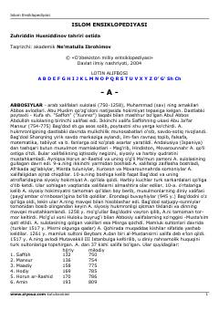

IEIslom dini va tarixi bo'yicha keng qamrovli o'zbek tilidagi qomus.
Bu kitob islom dini, tarixi, tushunchalari va shaxsiyatlari haqida qomusiy ma'lumotlar to'plami bo'lib, akademik Ne'matulla Ibrohimov taqrizi ostida nashr etilgan. Ensiklopediyada Abbosiylar sulolasidan tortib islomiy atamalar, huquqiy tushunchalar va tarixiy shaxslargacha keng qamrovli maqolalar keltirilgan. Asar 2004-yilda «O'zbekiston milliy entsiklopediyasi» Davlat ilmiy nashriyoti tomonidan chop etilgan.